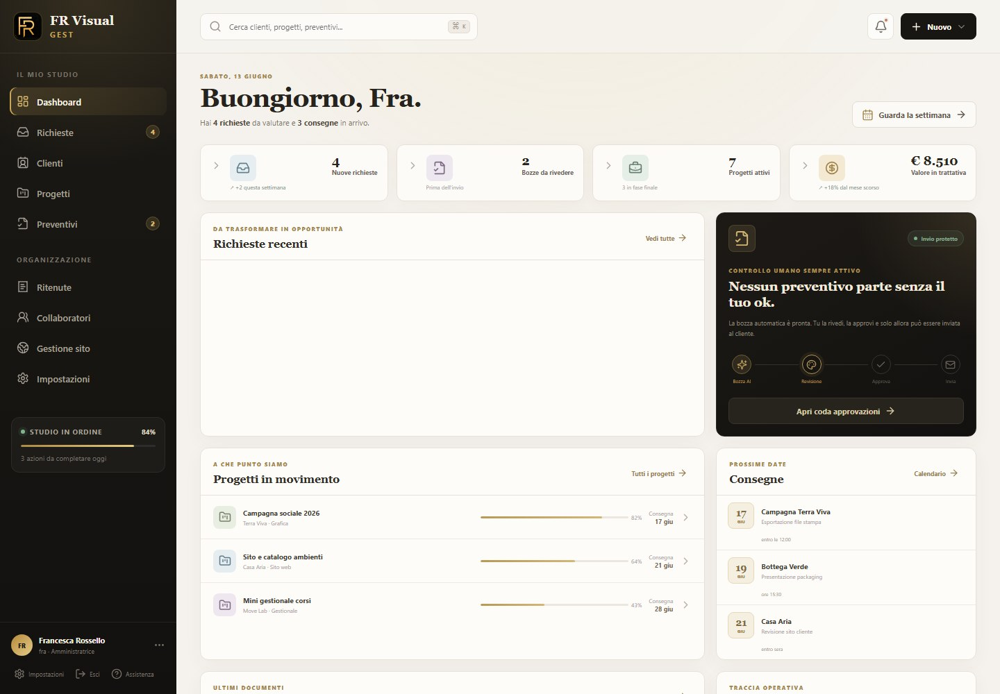

Tutto in un posto
Clienti, progetti, collaboratori e documenti raccolti in modo ordinato.
Gestionale locale su misura
Un esempio reale di strumento locale creato per organizzare richieste, clienti, collaboratori, preventivi, documenti, consegne e scadenze in modo più chiaro.

Esempio reale
FR Visual Gest nasce da un’esigenza molto concreta: non perdere pezzi.
Clienti, richieste, collaboratori, preventivi, documenti, consegne e scadenze spesso finiscono divisi tra messaggi, fogli, email e promemoria. Il risultato è che si perde tempo, si rischia di dimenticare qualcosa e ogni attività sembra ripartire da zero.
Con un gestionale locale su misura, invece, le informazioni vengono raccolte in un unico spazio semplice, visivo e ordinato.
L’obiettivo non è complicare il lavoro con un software enorme, ma semplificare i passaggi ripetitivi: trovare subito un cliente, controllare lo stato di un progetto, preparare un preventivo, ricordare una scadenza, vedere cosa manca e cosa è già stato fatto.
Devo ammetterlo: sono un po’ nerd. Mi piace trasformare il caos operativo in schermate semplici, belle e facili da usare.
Cosa cambia nel lavoro quotidiano
Clienti, progetti, collaboratori e documenti raccolti in modo ordinato.
Scadenze e consegne diventano visibili, non restano solo nella testa.
Bozze, stati e documenti possono essere gestiti con più metodo.
Le attività ripetitive si trasformano in passaggi più semplici, anche con un click.